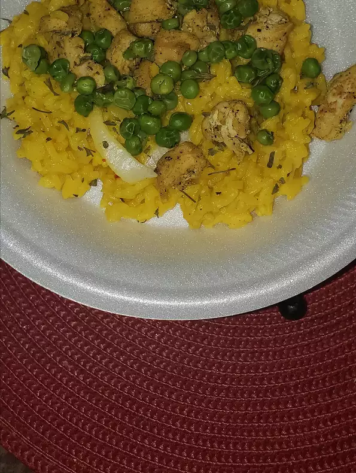

Basic Yellow Rice

Description
Simple and delicious basic yellow rice.
Ingredients
- 2 tablespoons unsalted butter
- 3 large shallots, chopped (Optional)
- 2 cups uncooked jasmine rice, rinsed and drained
- 1 tablespoon chopped garlic
- 1 teaspoon salt
- 1 teaspoon ground turmeric
- 1 teaspoon ground coriander
- ½ teaspoon ground cumin
- 2 bay leaves
- 3½ cups low-sodium chicken broth
Steps
- Heat butter in large, heavy saucepan over medium heat.
Add shallots; cook and stir until softened and translucent, about 3 minutes.
Pour in rice, garlic, salt, turmeric, coriander, cumin, and bay leaves.
Continue to cook and stir for 3 minutes.
Add chicken broth and bring to a boil.
Reduce heat to low, cover, and cook until broth is absorbed and rice is tender, 20 to 25 minutes.
- Remove from heat. Discard bay leaves. Transfer to a bowl.